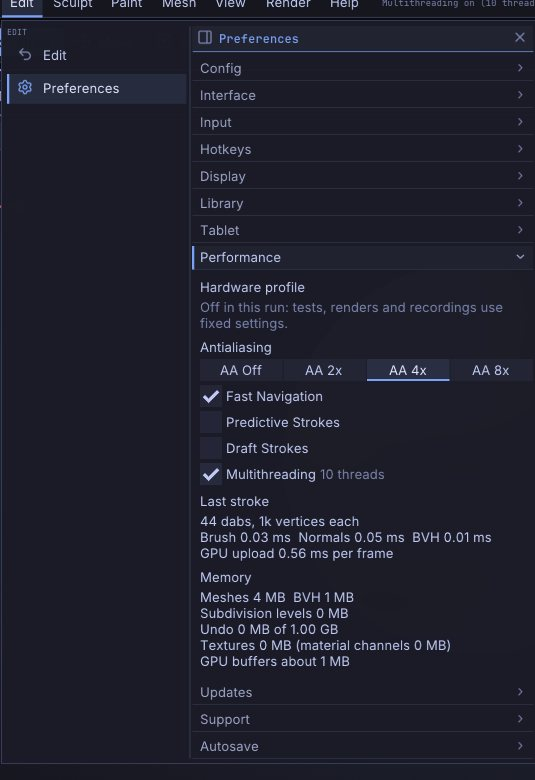

Performance and big meshes
SculptForge is built to sculpt tens of millions of polygons. Brushes, normal updates and the picking structure run on every core of your processor, a stroke sends the graphics card only the part of the mesh it changed, and undo stores only the vertices a stroke touched, so it stays quick however big the model is. This chapter explains what to expect, the settings in Preferences > Performance, and how to get the most out of a big sculpt.


What to expect#
On a 2021 laptop (Apple M1 Pro, 10 cores, integrated GPU), with X symmetry on and a medium Draw Size:
| Mesh | One dab of a medium brush | Turning the view |
|---|---|---|
| 4 million triangles | about 2 ms | about 350 frames a second |
| 16 million triangles | about 4.5 ms | about 170 frames a second |
| 33 million triangles | about 7.5 ms | about 110 (4x antialiasing), 270 with Fast Navigation |
Turning the view stays smooth at 100 million triangles: about 50 frames a second with 4x antialiasing, 100 with Fast Navigation. These figures are for closed models (no holes); see "Closed meshes draw faster" below.
A dab is one step of the brush along the stroke; the app draws several per frame when you move fast. Under 16 ms per dab a stroke keeps up with a 60 Hz display. Very large brushes cost more, since they move more vertices: a brush covering a tenth of a 33 million triangle sphere (about a million vertices per dab with symmetry) takes about 45 ms per dab with Standard, 21 ms with Smooth and 15 ms with Move, of which sending the change to the graphics card is about a third.
Performance figures has the full measurements, and how to run the same benchmark on your own machine.
Preferences > Performance#
Open Preferences and click Performance.
| Control | What it does |
|---|---|
| Antialiasing (Off, 2x, 4x, 8x) | How many samples per pixel the 3D view uses to smooth edges. 4x is the default. More samples look smoother and cost more on huge meshes. If the graphics card can't make room for them, the view quietly uses fewer and the panel says so |
| Fast Navigation | While you rotate, pan or zoom a scene bigger than the hardware profile's motion proxy threshold (see below), draw it without antialiasing and draw big meshes as a lighter version with about a fifth of their triangles, so the view keeps up. The full mesh, smooth again, is back as soon as the view stops. On by default |
| GPU Brushes (Automatic, On, Off) | Work out big brush dabs on the graphics card with OpenGL 4.3 compute shaders (Windows and Linux): Standard, Clay, Inflate, Flatten, Pinch and Crease, and on micro levels also Smooth and Move. The graphics card computes each point's change and SculptForge applies it to the model as whole numbers, so undo, redo, saving and the Sculpt Timeline work exactly as with processor brushes, and the result matches them within rounding. Automatic (the default) uses the graphics card only where calibration measured it faster than the processor for a big dab; the hardware profile lists both times. The status bar shows GPU or CPU beside the frame rate. Without compute shaders (macOS, older drivers) the control is greyed out and every brush runs on the processor |
| Predictive Strokes | The brush is worked out on its own thread while the view keeps drawing at full speed. The dabs it hasn't finished show at once as a preview on the surface, and the brush cursor and the stroke's head are drawn where the pen is about to be, so on a heavy mesh the surface moves under the pen straight away and lifting the pen never waits. The finished sculpt is exactly the same as with it off. On by default (painting, masking, dynamic topology, Move, Snake Hook and the drag strokes work as before) |
| Draft Strokes | With Predictive Strokes: while you sculpt, the brush only moves the surface, the moved part is shaded from its facets, and the smooth shading, the cavities and the rest are worked out once when you lift the pen. Lighter on laptops and on battery. Inflate and the plane brushes use the surface's direction from the stroke's start, so the result can differ slightly from a full stroke. Off by default |
| Multithreading | Run brushes, normal and picking updates and project saving on every core (the number of threads is shown beside it). The results are exactly the same with it off; turn it off only to compare speeds or rule it out when something goes wrong |
| Last stroke | What your last stroke cost per dab: Brush (finding and moving the vertices), Normals (shading), BVH (the structure that finds the surface under the cursor), and the GPU upload per frame |
| Memory | What the scene holds: the meshes, the BVHs, the subdivision levels kept for stepping between them, the undo history (up to 1 GB; the oldest steps are dropped beyond that) and, roughly, the graphics card's buffers |
The hardware profile#
The first time you start SculptForge, a small window says Getting to know this computer for a second or two: it checks how fast your graphics card draws and receives data, how fast a brush runs and how fast the memory is, and picks settings to match. It does this once, and again only when you change the graphics card, update its driver or install a new version. Press Esc or Skip to skip it; the settings then come from the type of graphics card and the memory sizes. Nothing is sent anywhere: the results stay in your settings folder.
There are two main profiles and a safe mode:
| Profile | For | What changes |
|---|---|---|
| Laptop / Budget | laptops and most desktops: 8-32 GB of memory, a 2-8 GB graphics card, most Apple Silicon Macs | a moderate number of triangles drawn while the view moves; brushes shade continuously on mains power |
| Workstation | 64 GB of memory or more, and a graphics card with 16 GB or more or an Apple Silicon Max / Ultra (or another chip whose graphics share the memory) that measures as fast | more triangles drawn per frame, larger textures and subdivision limits, shading updated with every dab |
| Software (safe mode) | no graphics driver, so the drawing happens on the processor (llvmpipe) | the lightest settings, no antialiasing |
On a laptop running on battery, whatever its profile, SculptForge sends less data to the graphics card per frame and aims for 60 frames a second, and the status bar says so; plugged in again, it goes back.
At the top of Preferences > Performance:
| Control | What it does |
|---|---|
| Detected ... | the graphics card, its memory and the profile, and why |
| Measured numbers | triangles drawn per second, upload speed, the cost of a brush dab, memory speed, the processor and the system |
| Settings | how many triangles the view draws per frame, from what size big scenes use their lighter version while moving, memory and upload budgets, texture and subdivision limits, threads, the target frame rate (60, or 120 / 144 on a fast display) |
| Frame Governor | while the view moves, watch how long frames take and draw big scenes' lighter version sooner or later to hold the target frame rate. It only changes what you see while moving, never the model. On by default |
| Re-calibrate | measure again (your overrides are kept) |
| Manual overrides | choose the profile yourself, or set any of the numbers (empty = automatic); Back to automatic clears them. Overrides are saved at once and kept when you re-calibrate |
From a shell, sculptforge --calibrate measures and prints the result as JSON.
Like the other preferences, these last until you quit; Preferences > Config > Store Config keeps them. Every setting is also in the F3 command palette (type "antialiasing", "fast navigation" or "multithreading").
Working with big meshes#
- Sculpt at the lowest level that holds the detail. With subdivision levels you can shape the forms a few levels down and only go to the top for fine detail. Each level down is four times lighter.
- Hide what you're not working on. Hidden SubTools aren't drawn and hidden parts of a SubTool aren't sculpted (Tool > Visibility). A hidden SubTool costs no drawing time at all.
- Memory. A divided model takes about 85 bytes per triangle: about 37 for the sculpting mesh, 17 for its BVH and 29 for its subdivision levels. A 33 million triangle sculpt with levels needs about 3.4 GB of memory, a 100 million one about 9 GB (and a little more while dividing). Opening a project needs only a little more than the model itself. A mesh without levels (an import, a remesh) takes about 60 bytes per triangle for the mesh. Project files over 4 GB are saved in the ZIP64 format.
- How far Divide goes depends on the memory: about 160 million triangles on a computer with 32 GB.
- The graphics card. A mesh needs about 15 bytes per triangle on the graphics card (polypaint and a mask add about 3; the wireframe, while it is on, about 4; the lighter version Fast Navigation draws, once you move the view, about 1.5). If a SubTool doesn't fit, SculptForge doesn't draw it and says so in the status bar instead of failing: hide other SubTools or step down a subdivision level.
- Closed meshes draw faster. Parts of a mesh that face away from you are skipped when the mesh is closed (no holes or hidden parts) and you look at it from outside. A mesh with holes, hidden polygons, or a view from inside it draws everything, which can take about twice as long on huge meshes.
- Undo keeps only what each stroke changed, so a stroke on a 33 million triangle mesh undoes in a few tens of milliseconds, and the history holds many such strokes within its 1 GB.
Dynamic topology#
Dynamic topology only works where the brush is, so its speed depends on how many triangles the brush covers rather than on the size of the mesh: on an M1 Pro a medium dab takes 9 to 13 milliseconds on a one-million-triangle sphere. It gets slower when a big brush (or a low Detail) has to merge many small triangles at once; it then spreads the work over several dabs. Undoing a stroke rebuilds the mesh's connections, which takes about a tenth of a second per million triangles. sculptforge --bench --bench-dyntopo measures it on your machine.
Proof mode: see it for yourself#
Help > Benchmark (or sculptforge --benchmark) shows how responsive sculpting is on your own computer, measured the way it feels rather than the way a developer measures it. For each size, 5, 20 and 33 million triangles (and 100 million when there is enough free memory), it builds a sphere with subdivision levels, then plays a scripted pen stroke into the same code your mouse and pen go through, 240 pointer samples a second: a figure eight with a 60-pixel brush, the same with a 240-pixel brush, then a turn of the view. It replaces the scene, so save your work first; Esc stops it.
While it runs, a panel in the corner shows:
- fps and the frame time: the median (p50), and the 95th and 99th percentile, the slow frames you would notice as a hitch.
- Stroke trails pointer: how far the stroke on screen is behind the pointer, in milliseconds (from the pointer sample the newest drawn dab belongs to until that frame is handed to the display; the display's own refresh comes on top) and in pixels along the path.
- The memory SculptForge uses.
Vertical sync is off during the run so frame times aren't capped at the display's rate (tick Keep vertical sync on to measure with it). At the end a table sums up each mesh and phase, and two files are written: a video of the run with the panel in it (needs ffmpeg; recording costs a millisecond or two per frame) and a JSON file with the results, your processor, graphics card, memory, operating system and the SculptForge version and commit. In the app they go to the benchmarks folder in SculptForge's settings folder (Open folder in the results); from the command line, to the current folder:
sculptforge --benchmark --benchmark-sizes 5,20,33 --benchmark-out mine.json --benchmark-video mine.mp4--benchmark-no-video skips the video, --benchmark-vsync keeps vertical sync on, --benchmark-seconds 6 sets the length of each stroke, and --size 1920x1080 the window (a tiling window manager may choose another size; the result records the one used). Share a result on the benchmarks page as its format description explains.
Measuring your own machine#
sculptforge --bench builds a sphere at 4, 16 and 32 million triangles and measures every brush, undo, stepping subdivision levels, saving and opening a project, and turning the view, then prints a report. sculptforge-cli --bench measures the same without the graphics card. Options:
| Option | What it does |
|---|---|
--bench-sizes 4,16,32 | The sizes, in millions of triangles |
--bench-dabs 40 | Dabs per test stroke |
--bench-brushes large | Only the brushes whose name contains the text (here the large-radius ones) |
--bench-no-project | Skip saving and opening the project (which needs twice the memory) |
--bench-view | Measure only what the view costs: uploading to the graphics card, a few strokes, and turning the view |
--bench-out report.md | Write the report to a file |
When nothing changes, SculptForge draws nothing: the graphics card and processor rest until you move the mouse, press a key, or something finishes in the background. sculptforge --measure-idle 5 sits idle for five seconds (after a short start) and prints the frames drawn and the processor time used. If the view ever stops updating when it should (a driver that misbehaves), start SculptForge with the environment variable SF_CONTINUOUS_REDRAW=1 to draw every frame as versions before 0.9.5 did, and please report it; SF_REDRAW_LOG=1 logs why each frame was drawn.
On a very dense mesh a dab can cost more than a frame. The dabs of a stroke then wait in a queue that SculptForge works through for a few milliseconds each frame, reading the pen or mouse in between, so a fast curve stays a curve; once more than about 50 ms of dabs are waiting, every second waiting dab is left out (a wider spacing), so the brush stays close to the pointer and stops soon after you lift the pen. sculptforge --run "new_sphere" --measure-stroke 3,200 draws a fast circle for three seconds with a 200-pixel brush and prints how far the dabs strayed from it and the frame times. SF_STROKE_IMMEDIATE=1 places every dab as soon as the pointer moves (versions before 0.9.6), SF_STROKE_BACKLOG=0 never leaves dabs out, and SF_STROKE_LOG=1 logs the queue each frame (with Predictive Strokes, each batch the brush thread places and what packing it for the graphics card cost). SF_PREDICTIVE_STROKE=0 / 1 and SF_DRAFT_STROKE=0 / 1 override the two preferences, and SF_FRAME_LOG=16 logs every frame slower than 16 ms with where its time went. tools/bench_strokes.sh in the source runs the stroke measurement on 5, 21 and 33 million triangle spheres and prints the frame times (mean, 95th and 99th percentile), how far the surface and the preview trail the pointer, press and release, for one build or two side by side.
The perf_info command (also in the Console) prints the threads in use and the memory the scene holds; set_multithreading enabled=false turns multithreading off from a script.